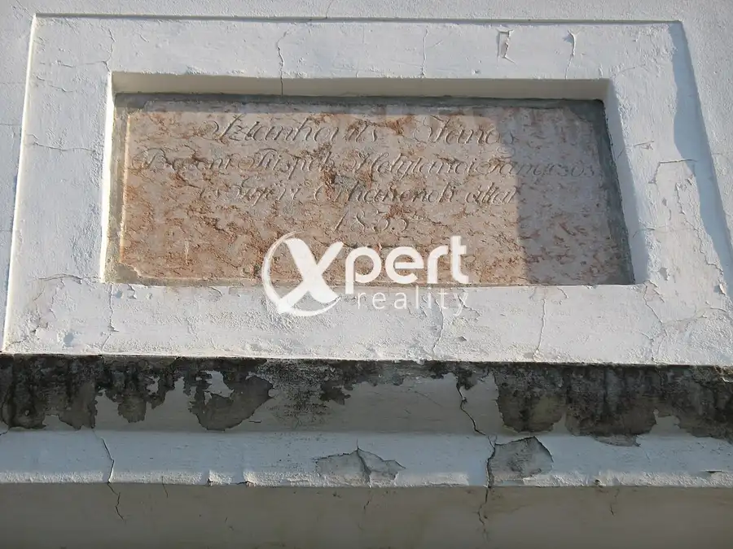
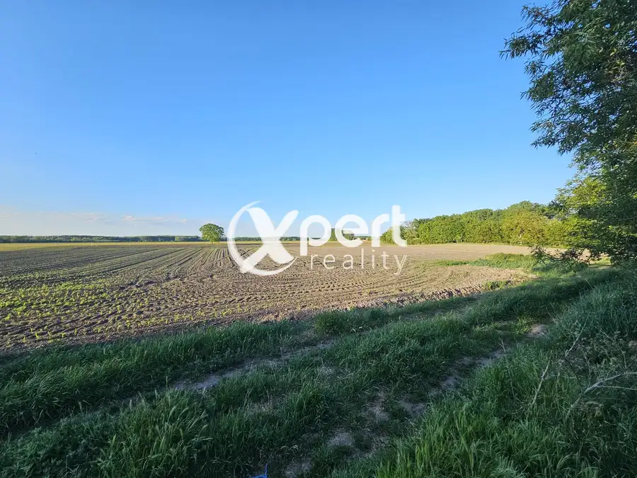
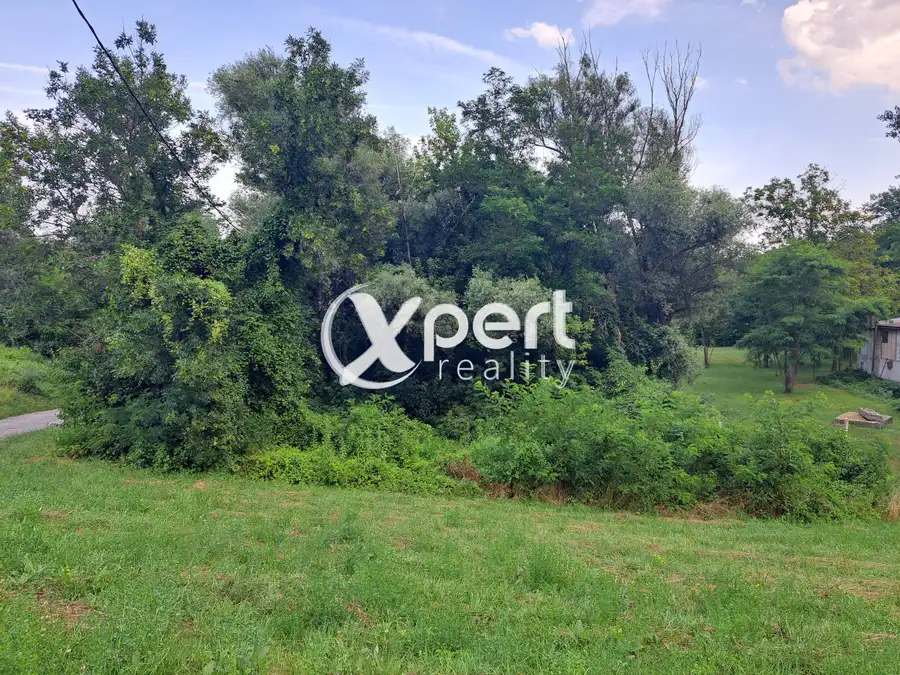
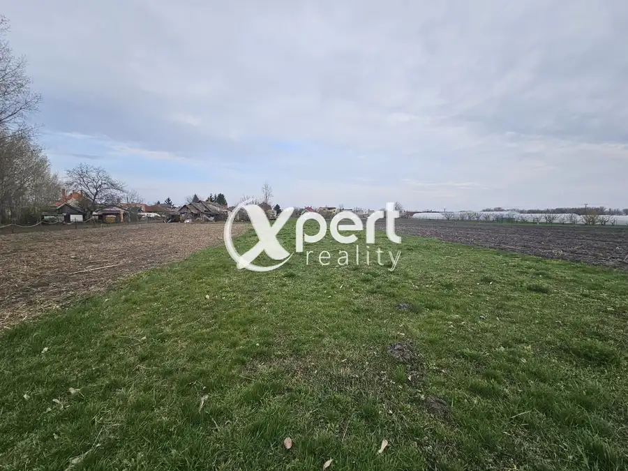
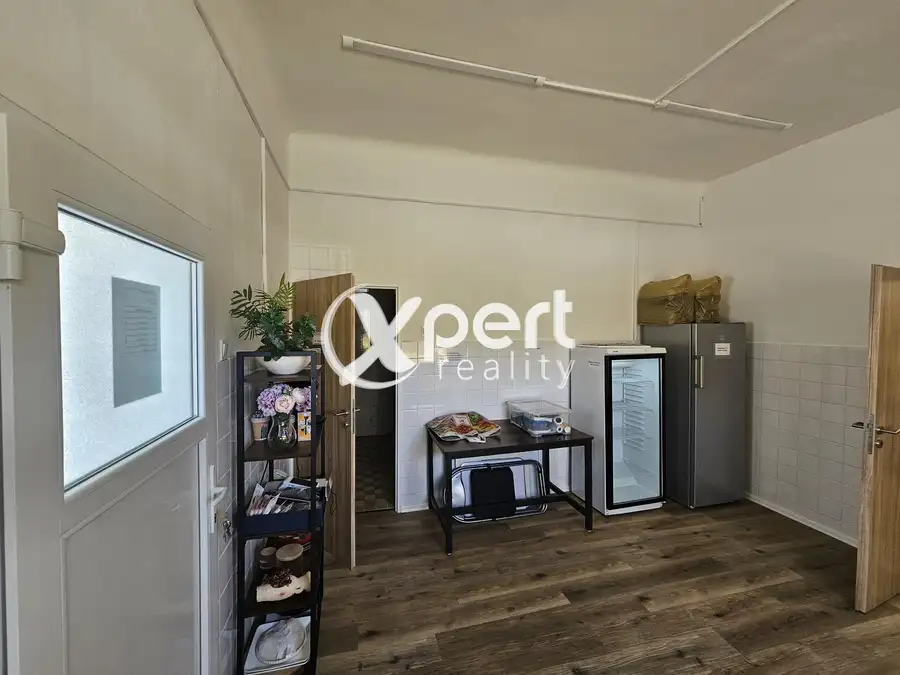
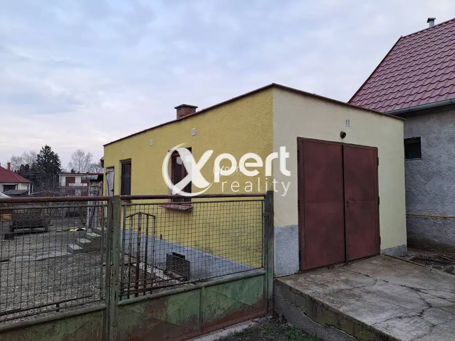
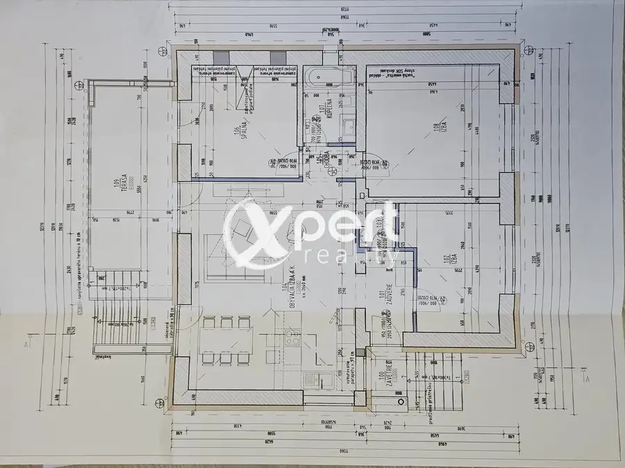

Aktuálna ponuka
Nehnuteľnosti, ktoré ponúkam
12 nehnuteľností na predaj a prenájom. Vyberte typ, alebo napíšte lokalitu.
12 z 12 ponúk
 DomNové10
47 000 €3 izb. Rodinný dom -Znížená cena!
Medveďov
100 m²
Ponúkam na predaj 3 izbový dom v príjemnej časti Žitného ostrova v obci Medveďov.Dom sa nachádza v centre obci na pozemku o výmere 330 + 990m2 s…
DomNové10
47 000 €3 izb. Rodinný dom -Znížená cena!
Medveďov
100 m²
Ponúkam na predaj 3 izbový dom v príjemnej časti Žitného ostrova v obci Medveďov.Dom sa nachádza v centre obci na pozemku o výmere 330 + 990m2 s…
 PozemokNové7
35 000 €Pozemok, lesopark, zeleň, rekreácia
Ňárad
7530 m²
Ponúkam vám na predaj pekný rekreačný pozemok.Spomínaný pozemok sa nachádza v katastrálnom území Ňárad, je umiestnený v tichom a príjemnom prostredí…
PozemokNové7
35 000 €Pozemok, lesopark, zeleň, rekreácia
Ňárad
7530 m²
Ponúkam vám na predaj pekný rekreačný pozemok.Spomínaný pozemok sa nachádza v katastrálnom území Ňárad, je umiestnený v tichom a príjemnom prostredí…
 PozemokNové2
33 000 €Znížená cena! Záhrada v obci Baloň v Medzičilizí
Baloň
2300 m²
Ponúkame na predaj záhradu vo výmere 2300 m2. Pozemok je vhodný na pestovanie zeleniny, ovocie alebo na rekreáciu. Nachádza sa v zastavanej časti…
PozemokNové2
33 000 €Znížená cena! Záhrada v obci Baloň v Medzičilizí
Baloň
2300 m²
Ponúkame na predaj záhradu vo výmere 2300 m2. Pozemok je vhodný na pestovanie zeleniny, ovocie alebo na rekreáciu. Nachádza sa v zastavanej časti…
 Byt10
125 000 €Krásny 3-izbový byt na Námestie Priateľstva
Dunajská Streda
3-izbový60 m²2. podlažie
Slnečný 3-izbový byt – pripravený na okamžité bývanie.Hľadáte bývanie, do ktorého sa môžete ihneď nasťahovať bez ďalších investícií? Potom vás tento…
Byt10
125 000 €Krásny 3-izbový byt na Námestie Priateľstva
Dunajská Streda
3-izbový60 m²2. podlažie
Slnečný 3-izbový byt – pripravený na okamžité bývanie.Hľadáte bývanie, do ktorého sa môžete ihneď nasťahovať bez ďalších investícií? Potom vás tento…

Pozemok4 33 000 €POZEMOK, Záhrada vo výmere 2300 m2 Baloň 1150 m² Ponúkame na predaj záhradu vo výmere 2300 m2. Pozemok je vhodný na pestovanie zeleniny, ovocie alebo na rekreáciu. Nachádza sa v zastavanej časti…
Dom9 166 000 €4 izb. rodinný dom s garážou na veľkom pozemku Malé Dvorníky 200 m² Ponúkam na predaj murovaný poschodový rodinný dom pri Dunajskej Strede v Malých Dvorníkoch.Rodinný dom sa nachádza na pozemku v zastavanej časti… Dom8
250 000 €Exkluzívna novostavba, 4-izbový rodinný dom s dvoj garážou Bohelov
Boheľov
350 m²
Rodinný dom v okrese Dunajská Streda – pokoj, pohodlie.Rozhodujete sa medzi tichou lokalitou a výbornou dostupnosťou?Viac nemusíte! Tento rodinný dom…
Dom8
250 000 €Exkluzívna novostavba, 4-izbový rodinný dom s dvoj garážou Bohelov
Boheľov
350 m²
Rodinný dom v okrese Dunajská Streda – pokoj, pohodlie.Rozhodujete sa medzi tichou lokalitou a výbornou dostupnosťou?Viac nemusíte! Tento rodinný dom…

Pozemok10 Cena dohodouStavebný pozemok pri DUNAJI Gabčíkovo Gabčíkovo 900 m² XpertReality vám ponúka na predaj pekný stavebný, rekreačný pozemok pri DUNAJI v Gabčíkove.Pozemok sa nachádza v katastrálnom území Gabčíkovo, je…
Pozemok6 Cena dohodouStavebný pozemok Ohrady 2169 m² Ponúkam vám stavebný pozemok vo výmere 2169 m2 v Ttchej ulici je len pár krokov od lesa s rozmerom: 18X120 M.Cena nehnuteľnosti: 70,-eur /1m2Xpert…
Komerčné priestory9 Cena dohodouPriestory pre výrobu Vrakúň 65 m² Ponúkam Vám prenájom priestorov schválených pre potravinársku výrobu (cukrársku výrobu) 70m2+.Kuchyňa je zariadená, kancelárske priestory, skladové…
Dom9 58 000 €3-izbový starší RD. s garážou Pataš 180 m² XpertReality s.r.o., ponúka na predaj 3 izbový rodinný dom v príjemnej časti Žitného ostrovRealitná kanceláriaa v obci Pataš, neďaleko Dunajskej…
DomPredané10 Predané4 izbový rodinný dom "" Vrakúň 120 m² Ponúkam Vám na predaj úplne rekonštruovaného 4 izbového rodinného domu s krytou terasou a s pivnicou v kludnej časti Vrakúň- Nekyje na Ostrove.…Tomuto výberu zatiaľ nezodpovedá žiadna ponuka. Napíšte mi, čo hľadáte.